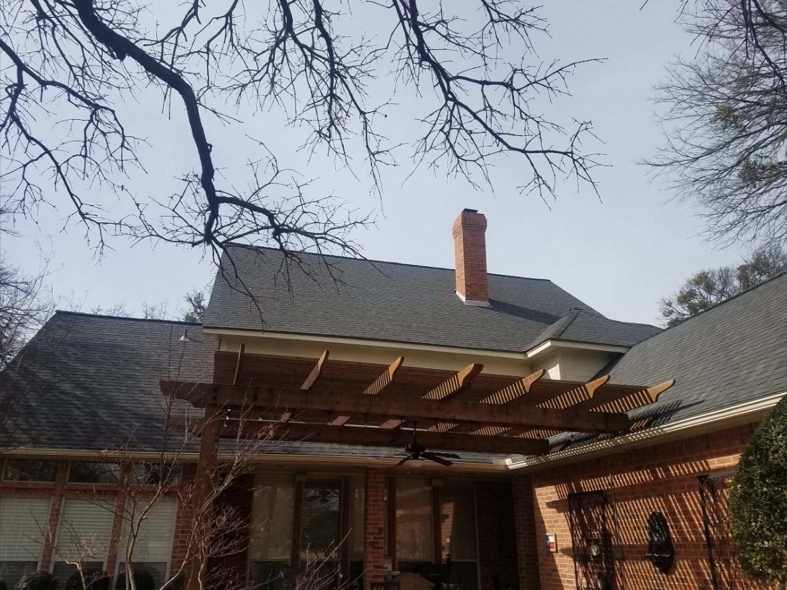
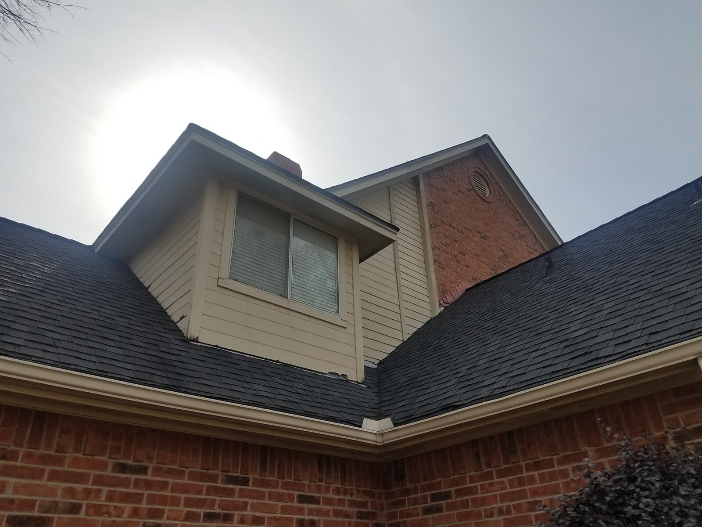
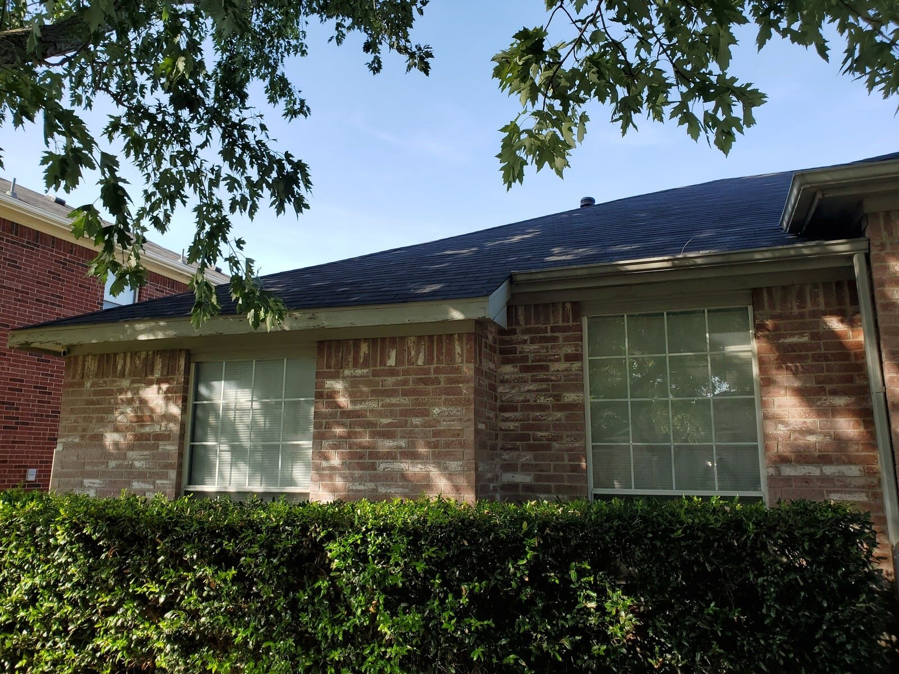

Architectural Asphalt Shingles
Laminated fiberglass shingles are a popular choice for sloped homes. They come in many colors and profiles, with product options ranging from standard to premium.
Dallas-Fort Worth Roofing Contractor
Roof inspections, storm damage repairs, full replacement, emergency tarping, flashing and ventilation work for homes and commercial properties.
Roofing Systems & Manufacturer Coverage
The right roofing system depends on roof slope, deck condition, drainage, local requirements, appearance and budget. These are common options and examples of asphalt-shingle manufacturers; the written estimate should identify the exact product selected and its current warranty.
Laminated fiberglass shingles are a popular choice for sloped homes. They come in many colors and profiles, with product options ranging from standard to premium.
Some asphalt shingles are tested for impact resistance, including UL 2218 Class 3 or Class 4 products. Ratings depend on the exact model and do not mean a roof is hail-proof.
Metal panels and metal shingles can suit certain roof designs. Panel profile, coating, fastening and roof details affect product selection and the applicable manufacturer warranty.
Low-slope areas may call for a compatible membrane system, such as TPO, PVC or modified bitumen. Drainage, seams, penetrations and the existing roof assembly guide the choice.
Material selection / DFW, Texas
See the package, identify the model and compare what belongs in the complete roof assembly. These architectural asphalt shingles are examples to discuss for a suitable sloped roof; metal, tile and low-slope systems need their own specifications.
GAF

Architectural asphalt shingles with LayerLock technology and a defined StrikeZone nailing area.
For your DFW projectCompare the proposed HDZ shingle together with the starter, ridge caps, deck protection and flashing. Ask for every selected component to be named in the written estimate.
Limited lifetime shingle coverage for eligible owners; the standard Smart Choice protection period is 10 years. See the current warranty for covered costs, exclusions and property eligibility.
Owens Corning

Architectural asphalt shingles with contrasting color blends and a SureNail reinforced nailing area.
For your DFW projectReview the Designer color blend on a physical sample and confirm the exact product line. Compare the installed scope as well as the visible finish.
Limited lifetime shingle coverage for eligible owners; standard TRU PROtection applies for the first 10 years. Coverage changes after that period. The current manufacturer terms control.
CertainTeed

Dual-layer architectural asphalt shingles with a fiberglass base and a NailTrak nailing area.
For your DFW projectDiscuss Landmark as part of the whole roof assembly, including the deck, underlayment and ventilation. Keep the approved color and warranty document with the project record.
Limited lifetime shingle coverage for eligible residential applications, with 10-year SureStart protection. Transfer rules, covered costs and exclusions are defined in the current manufacturer warranty.
*Manufacturer coverage: Lifetime is a defined limited-warranty term for eligible owners and properties, not the expected service life of the roof. Standard manufacturer coverage for product defects is separate from installer workmanship. Enhanced programs have additional component, installation, registration and sometimes contractor requirements; availability must be confirmed in writing. The applicable manufacturer document controls.
About the photos: Retailer package examples with source links. Packaging and colors may vary; supplier availability, the exact model and final color must be confirmed for your estimate. These images do not indicate inventory or manufacturer certification.
Have a material in mind?
Include the brand and model when requesting your estimate.
Complete Roofing Service
A roofing estimate should start with the roof that is actually on the building. We review visible shingle condition, flashing, penetrations, vents, transitions, roof edges and storm-related damage before recommending repair or replacement.
When replacement is appropriate, Luna General Contractors coordinates tear-off, decking-related repairs when needed, underlayment, shingles, flashing, ventilation and cleanup. For smaller issues, we can focus the scope on the affected area instead of automatically recommending a full roof.
Request Your EstimateWhat We Look For
North Texas roofs can be affected by hail, high wind, lifted or missing shingles, failed sealant, exposed fasteners, deteriorated flashing and age-related wear. Leaks may also appear around pipe penetrations, valleys, chimneys, wall transitions or roof-to-wall flashing.
Finding the source matters because interior staining does not always sit directly below the exterior opening. A useful roofing scope connects the visible symptoms with the likely entry point and the construction needed to correct it.
Real Projects
Real residential roofing work by Luna General Contractors.




Service Areas
We serve homeowners and property owners throughout DFW, including Dallas, Fort Worth, Arlington, Mansfield, Midlothian, Waxahachie and Weatherford. Visit our service areas page for additional cities.
Roofing FAQ
These answers explain the construction factors we review. Insurance coverage remains subject to the policy and carrier decision.
Request a Roof EstimateRoof replacement cost depends on roof size, pitch, shingle type, number of layers, decking condition, flashing, ventilation, access and disposal. A site inspection is the best way to build an accurate scope and estimate.
Yes. We inspect visible conditions on shingles, vents, flashing, penetrations and related exterior components, then prepare a repair or replacement scope based on the property.
That depends on the affected area, roof age, overall condition, whether compatible materials are available, and whether a repair can be completed without damaging surrounding shingles.
Coverage depends on the policy, cause of loss, deductible, exclusions and the carrier's inspection. Storm damage may qualify, while wear, maintenance issues or excluded causes may not.
Actual Cash Value generally reflects replacement cost minus depreciation. Replacement Cost Value generally reflects the estimated cost to replace covered property, subject to policy terms, limits and deductible.
On some replacement-cost policies, recoverable depreciation may be released after covered repairs are completed and documented. The policy and settlement documents control whether depreciation is recoverable.
If panels cover areas that require roofing work, they generally need to be professionally detached and reset. The scope should address scheduling, roof penetrations, flashing and responsibility for reconnecting the system.
Pitch affects measurements, safety setup, access, labor and material handling. Steeper slopes can require additional fall protection and increase the roof surface area compared with the building footprint.
Free Estimate
Call Luna General Contractors for roofing service throughout Dallas-Fort Worth.